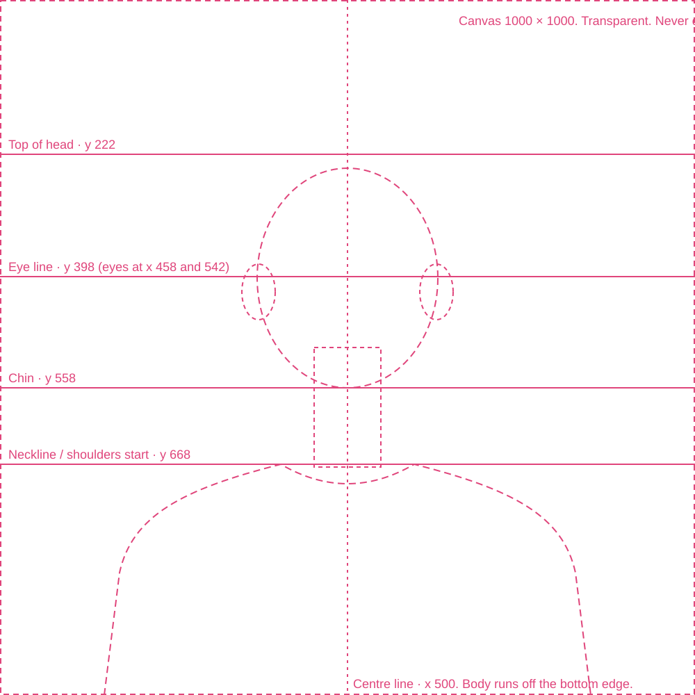

One character, built from parts
Instead of a finished portrait for every age and look, the illustrator draws the character once, split into layers. The code stacks the layers and handles ageing: greying hair, a receding hairline, lines and glasses. The drawings below are rough placeholders that show the format; the real art replaces them file for file.
Try it
What the illustrator sends: one file per layer
The character above, taken apart. Each tile is one file, shown on the full canvas. The empty space is part of the file. Layers stack from first to last.
Ageing is handled in code
The same choices at seven ages. Nothing here was drawn separately: hair colour, receding hair, lines and glasses all come from rules.
And the variety comes free
28 placeholder parts make every face below. With the real parts, each reader in a chart could get their own character.
Spec for the illustrator

Canvas and positions
- Artboard: 1000 × 1000 px, square, for every part. Start from
template.svg. - Centre line: x 500. The character faces forward and is symmetrical about it.
- Head: top at y 222, eye line at y 398 (eyes at x 458 and 542), chin at y 558.
- Ears: centred on x 372 and x 628, y 420.
- Neck: x 452–548, from under the chin to y 672.
- Shoulders: the neckline starts at y 668; the body runs off the bottom edge, like the current portraits.
- Small shifts are fine (a bun can rise above y 222). What matters is that every part uses the same head and body.
Line and colour
- Line: one weight everywhere: 9 px at this size, round ends, colour
#111111. Age lines can be thinner (5 px). - Recolourable fills: give the shape a layer name starting with
fill-hair,fill-skinorfill-top. Draw it in any colour; the code replaces it. Hair, beards and eyebrows should all befill-hairso they grey together. - Everything else (white shirts, black jackets, pattern dashes) stays exactly as drawn.
The layers, back to front, and what to draw
| # | Layer (file prefix) | What goes in it | Example variants |
|---|
Do
- Export each layer as its own SVG at 1000 × 1000, with the empty space kept.
- Name files
layer--variant.svg, lower case, e.g.hair-front--curly.svg. - Split long hair into a back part (behind the head and neck) and a front part (fringe).
- Draw facial hair, glasses and age lines so they sit on top of any face.
- Export layer names as IDs (Illustrator: Object IDs: Layer Names; Figma does this by default).
Don’t
- Crop, trim or “fit to content” on export. That breaks the positions.
- Put a background colour inside a part. The background is set in code.
- Draw grey or white versions of the hair. The code greys it.
- Embed bitmaps or textures inside the SVG, or outline the strokes into different weights.
- Mix angles: if one part is three-quarter view, all of them need to be.
Handing it over
Put the files in character-kit/parts/ (replace the placeholders with the same names, or add new variants), run python3 character-kit/build.py, and reload this page. New variants show up automatically. build.py skips and names any file that isn’t on a 1000 × 1000 canvas.
Every placeholder part
On the full canvas, as they’re exported.